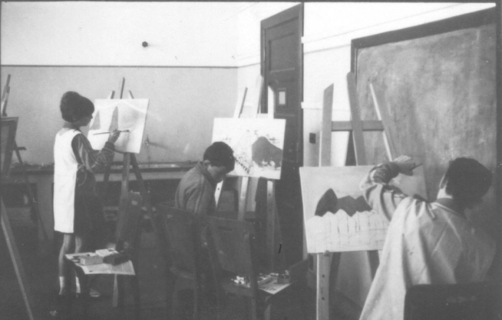

Reformas de base e reação ultraconservadora
A LDB de 1961 (Lei nº 4.024/61) foi criada em um período de transição política, após a renúncia do presidente Jânio Quadros e a ascensão do vice-presidente João Goulart. Prevista na Constituição de 1946, levou 15 anos para ser promulgada. O ambiente era de fortes tensões e lutas por reformas sociais e educacionais.
Neste sentido, a LDB/61 incorporou diversos princípios do movimento escolanovista, que defendia uma educação mais democrática e voltada para o desenvolvimento do estudante, sendo criticada pelos setores conservadores, incluindo as escolas confessionais (vinculadas a instituições religiosas, majoritariamente a igreja católica) e pelos setores empresariais, beneficiados pelas reformas Capanema, implementadas durante a ditadura varguista, cujo legado inclui a criação dos Serviços de Aprendizagem Industrial e Comercial (SENAI e SENAC).
O foco estava na formação humanista e na valorização da educação como um direito social, o que é um avanço considerável. A lei buscou descentralizar a administração da educação, permitindo maior autonomia para estados e municípios, além de promover a diversificação das modalidades de ensino. No que se refere à Educação Profissional (capítulo III, do “Ensino Técnico”), ela era vista como uma modalidade que deveria ser integrada ao currículo de etapas da Educação Básica: “ginásio” (equivalente aos anos finais do Ensino Fundamental) e “colegial” (equivalente ao Ensino Médio), enquanto um complemento à formação geral.

Título: Atividades de Artes Plásticas desenvolvidas por professores e estudantes do Ginásio Vocacional Candido Portinari, Batatais/SP
Fonte: Acervo CEDIC-PUC (1966).
Elaboração: Memorial da Resistência de São Paulo.
Embora houvesse a possibilidade de cursar o Ensino Superior, essa dualidade estrutural persistia. Tal dualidade nasceu no Brasil Colônia, com a divisão da população entre escravos, trabalhadores livres e elites, atravessou o Brasil Império, acrescentando os “órfãos e desvalidos”, e fortaleceu-se no Brasil República, com a permanência da separação entre os trabalhadores e as elites. Assim, tornou-se um elemento constante na educação brasileira.
Mesmo assim, os setores conservadores (em particular os empresariais) fizeram críticas à nova LDBEN (Lei nº 9394/1996), principalmente quanto à falta de definição de diretrizes ou objetivos específicos voltados ao atendimento das demandas do mercado de trabalho. Entretanto, por meio dos cursos de aprendizagem com terminalidade no ensino secundário, a previsão da participação das empresas sinalizava certa orientação para o mercado.
A Lei nº 5.692/71 foi promulgada durante o regime militar (1964-1985), um período ditatorial marcado por repressão política e censura. A educação foi utilizada como ferramenta para consolidar o controle social e promover os valores do regime, buscando formar “cidadãos” que se encaixassem nos padrões desejados pelo regime ditatorial militar. Dentro deste período, suprimiu-se do currículo escolar as disciplinas de Sociologia e de Filosofia e foram incluídas disciplinas que promoviam valores éticos alinhados ao Estado, como Educação Moral e Cívica e Organização Social e Política do Brasil. Nesse caminho, foram proibidos, nas demais disciplinas, autores, textos, metáforas ou qualquer atividade ou alusão feitas contra a ditadura.
Revogando praticamente todos os artigos da LDB/61, estabeleceu-se uma nova organização educacional no país, a Lei nº 5.692/71, que promoveu a unificação do ensino primário e ginasial em um único ciclo de 1º grau, alterando a estrutura educacional anterior, eliminando exames de admissão e enfatizando uma formação técnica e profissional alinhada às necessidades do mercado de trabalho e à lógica produtivista do governo militar. Ao mesmo tempo, determinou-se que os currículos dos cursos de 2º grau deveriam incluir disciplinas preparatórias para o mercado de trabalho – com base em levantamentos periódicos das necessidades locais ou regionais. Isso significava então que as escolas deveriam adaptar sua oferta educacional às demandas do mercado.
Em contraste à LDB/61, a Lei nº 5.692/71 definia o ensino técnico como uma parte essencial do ensino de 2º grau que deveria incluir a habilitação profissional, enfatizando-a como um objetivo central. A profissionalização compulsória, que aparentemente eliminava a dualidade estrutural, transformaria todo o ensino secundário brasileiro em ensino técnico, porém não foi isso que aconteceu: as escolas da elite continuaram com seus currículos amplos formadores da classe dirigente e as escolas públicas, sem estrutura, financiamento e professores, ofertaram cursos precários.
Dentre outras normativas do período, devem ser citadas a Lei nº 6.545/78 e o Decreto nº 87.310/82 que a regulamenta, relativos à transformação de três escolas técnicas federais (MG, PR e RJ) em centros de educação federal, permitindo-lhes oferecer cursos tecnológicos de nível superior. Segundo a professora Silvia Manfredi , em seu livro Educação Profissional no Brasil: atores e cenários ao longo da história – leitura considerada obrigatória para quem quer compreender os processos que moldaram a EPT no Brasil –, a Educação Profissional de qualidade sobreviveu apenas nas escolas técnicas e agrotécnicas.
O modelo compulsório, que acentuou a precarização social e educacional da escola pública, teve a sua "pá-de-cal" com a Lei nº 7.044/82, que, na prática, retorna ao modelo anterior de separação entre os cursos técnicos e cursos propedêuticos. A luta pela formação integral e pela Educação Profissional pública teve continuidade, junto com as lutas pela redemocratização, desaguando nas lutas por uma LDB democrática, ainda que restrita, e além dela, como será visto no próximo item.
Democracia e neoliberalismo
No segundo capítulo, foi discutido o contexto da elaboração da LDBEN/1996 (Lei 9.394/96), o da redemocratização e o da continuidade das lutas entre os setores progressistas e conservadores. Contudo, a vitória relativa que resultou na “Constituição Cidadã” de 1988 não implicou em avanços imediatos na educação. Como foi visto anteriormente, o processo de elaboração da LDBEN foi arrastado por anos, com voltas e reviravoltas, até 1996. No que se refere à Educação Profissional, a LDBEN trouxe novidades auspiciosas, ainda que o capítulo terceiro (da “Educação Profissional”) apresentasse lacunas que foram aproveitadas para uma regulamentação conservadora, principalmente por meio do Decreto nº 2.208/97.
A LDBEN/1996 reconheceu a Educação Profissional como uma modalidade da Educação Básica. Ao substituir “ensino” por “educação”, sinalizou-se a necessidade de conteúdos, métodos e formação de docentes específicos que, embora se relacionassem com o mundo do trabalho, estavam intimamente vinculados ao campo educacional – particularmente ao Ensino Médio. Ainda que de forma imprecisa, retomava-se, assim, o intuito de integração da formação técnica à formação geral.
Entretanto, as reformas do Ensino Médio e da Educação Profissional estavam em curso e intimamente relacionadas ao projeto neoliberal de Estado e de sociedade. No âmbito dessas reformas, reproduziam-se os debates entre as diversas forças sociais, dentre elas: os trabalhadores representados pelas centrais sindicais; os empresários, representados pelas respectivas confederações e serviços de aprendizagem; as diferentes facções do governo, representados pelo Ministério da Educação (MEC) e pelo Ministério do Trabalho e Emprego (MTE), então Ministério do Trabalho (MTb).
As diferentes posições no governo de Fernando Henrique Cardoso (1995-2002) e a posição empresarial confluíram para uma posição hegemônica, que foi implantada não sem a resistência dos trabalhadores e da comunidade acadêmica. Essa posição caracterizava-se por:
- o alinhamento dos cursos com o mercado de trabalho, em detrimento da educação integral;
- o aprofundamento da dualidade estrutural da educação;
- a separação da Educação Básica da Educação Profissional;
- a desvinculação da qualificação profissional da elevação da escolaridade;
- o fortalecimento das redes privadas em detrimento das redes públicas (federal, estadual e municipal);
- a separação de funções entre o MEC (cursos técnicos e tecnológicos) e o MTE (qualificação profissional de curta duração).
Tal concepção, coerente com o ideário neoliberal, e as premissas dos organismos multilaterais resultaram na estagnação das redes públicas, na criação de um enorme contingente de jovens egressos do Ensino Médio sem acesso à Educação Profissional, além de milhões de reais gastos em cursos de curta duração que nem qualificavam, nem garantiam a tão desejada “empregabilidade”. Esta passou por várias adequações em contextos variados (apesar de ser utilizada desde 1900 nos estudos econômicos e sociológicos sobre o emprego) para ressurgir na onda neoliberal dos anos 80 como explicação para o fenômeno do desemprego persistente.
Enquanto a empregabilidade-iniciativa enfatizava a responsabilidade individual na construção de competências e de redes sociais, a empregabilidade-interativa considera as interações sociais na busca por emprego. Ambas perspectivas retiram do Estado e dos empresários a responsabilidade pelo emprego, que passa a ser “culpa” do trabalhador individual “não qualificado”, e desconsideram fatores estruturais como políticas econômicas, desigualdade social e elementos estruturais do próprio mercado de trabalho.
Saiba mais: contexto social, cultural e político dos anos 1990
Título: Legislação e políticas públicas para EPT
Fonte: Legislação... (2019).
Para aprofundar seus estudos, sugerimos assistir ao vídeo acima, que apresenta um panorama geral sobre o contexto social, cultural e político dos anos 1990 e tematiza o conceito de globalização, a partir da perspectiva de Milton Santos, o avanço neoliberal e suas consequências para o Estado, o mundo do trabalho e a LDBEN/1996.
Registre as reflexões geradas em seu Memorial e/ou siga as instruções de seu tutor.